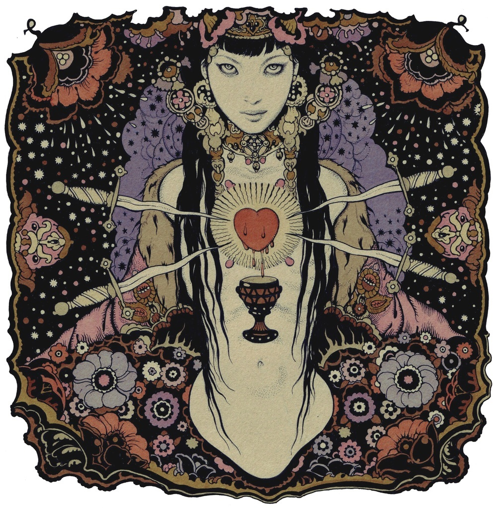

|

1. Si, soy yo, BABALON.
2. Y este es mi libro, que es el cuarto capítulo del Libro de la Ley. El completa el Nombre por el cual yo estoy fuera de Nuit por Horus, la incestuosa hermana de Ra-Hoor-Kuit.
3. Soy BABALON. El tiempo es. Vosotros locos.
4. Tu tienes que invocarme, oh maldito y querido loco.
(VERSOS DEL 4 al 8 PERDIDOS)
9. Ahora sabes que yo, BABALON, tomaré cuerpo y vendré entre los hombres.
10. Yo vendré como una llama fálica, como una canción errante, una trompeta en los umbrales del juicio, una bandera entre las tropas.
11. Y reuniros, mis niños, hacia mí, porque el TIEMPO está en mi mano.
12. Este es la forma de mi encarnación. ¡ Atención !
13. Deberás ofrecer todo tu arte y todo tu ingenio en mi altar, sin contener ni rehusar nada. Y tu deberás ser castigado hasta la muerte y lleno de dolor, y después serás desterrado y maldito, un vagabundo solitario en lugares abominables.
14. El Reto. Yo no he pedido nada más, ni tan siquiera he pedido. Otra cosa es vana. Así tú lo has deseado.
15. Has de saber esto: así vine a ti antes. Tú un gran señor y yo una doncella velada. Ah ciega locura.
16. Y después de la locura, todo en vano. Así ha sido, de múltiples formas. Ahora tú has ardido más allá.
17. Yo volveré de nuevo, en la forma que tú conoces. Ahora será tu sangre.
18.-El altar está correctamente dispuesto, y la túnica.
19. El perfume es sándalo, y el tejido verde y oro. Está mi copa, nuestro libro y tu daga.
20. Hay una llama.
21. El sigilo de la devoción. Que sea consagrado. Que sea verdadero. Que sea afirmado diariamente. Yo no soy despreciada. Tu amor es para mí. Procura un disco de cobre, de un diámetro de tres pulgadas, pintando sobre el campo azul mi dorada estrella, BABALON.
22. El será mi talismán. Conságralo con los supremos rituales de la espada y la copa.
23. Tú conoces mi llamada. Todas las canciones de amor son mías. También búscame en el séptimo Aétiro.
24. Esto es para un tiempo determinado. No busques el final, yo te instruiré en mi sendero. Pero sé sincero. ¿Sería dura si fuera tu amante, y estuviera ante ti? Pero ahora soy tu amante y yo estoy contigo.
25. Yo proveeré una copa, cuándo y dónde no lo digo. No la busques, no la llames. Deja que ella se declare. No preguntes nada. Guarda silencio. Habrá órdenes.
26. Mi copa debe ser perfecta. Esta es la forma de su perfección.
27. El trabajo es de nueve lunas.
28. El trabajo de Astarté, con música y festejos, con vino y todas las artes de amor.
29. Deja que Ella sea dedicada, consagrada, sangre a sangre, corazón a corazón, mente a mente, sencilla en deseo, nada fuera del círculo, todo a mí.
30. Y ella deberá deambular en el bosque embrujado bajo la Noche de Pan, y conocerá los misterios del Macho Cabrío y la Serpiente, y de los niños que están ocultos.
31. Yo daré el lugar y la base material, tú las lágrimas y la sangre.
32. ¿Es difícil, estar entre la materia y el espíritu? Para mí el éxtasis y agonía inefables. Pero yo estoy contigo. Y tengo gran fuerza. Tú tienes lo mismo.
33. Tú prepararás mi libro para su instrucción, también tendrás que enseñarla que puede tener capitanes y adeptos a su servicio. Sí, tú tomarás el negro peregrinaje pero no serás tú el que vuelva.
34. Deja que ella prepare su trabajo según mi voz en su corazón, con tu libro como guía y ninguna otra instrucción.
35. Y déjala ser a ella sabia en todas las cosas, y segura, y excelente.
36. Pero no dejes que ella piense sobre esto: mi camino no está en las formas solemnes o en las formas razonadas, sino en el salvaje y libre camino del águila, en el sinuoso sendero de la serpiente, y en el oblicuo sendero del factor desconocido e innumerado.
37. Porque yo soy BABALON, y ella es mi hija, única, y no habrá ninguna otra mujer como ella.
38. En Mi Nombre ella tendrá todo el poder, y todos los hombres y las cosas excelentes, y reyes y capitanes, y los secretos bajo su mando.
39. Los primeros sirvientes están escogidos en secreto, por mi fuerza en ella: un capitán, un abogado, un agitador, un rebelde. Yo los proveeré.
40. Invócame hija mía, y yo vendré a ti. Tú estarás llena de mi fuerza y fuego, mi pasión y poder te rodearán e inspirarán. Mi voz en ti juzgará naciones.
41. Nadie se resistirá a ti a quien amo. Aunque ellos te llamen ramera y puta, desvergonzada, falsa, diablo, estas palabras serán sangre en sus bocas, y después polvo.
42. Pero mis hijos te conocerán y te amarán y esto les hará a ellos libres.
43. Todo está en tus manos. Todo poder, toda esperanza y todo futuro.
44. Uno vino como un hombre, fue débil y falló.
45. Una vino como una mujer, y era loca y falló.
46. Pero tu arte va más allá de hombre y mujer, mi estrella está en ti, y tú tendrás éxito.
47. Incluso ahora tu hora golpea sobre el reloj de mi PADRE. Para El preparó un banquete y un Lecho Nupcial. Yo era esa Novia, señalada desde el principio T.O.P.A.N.
48. Ahora se aproxima la hora del nacimiento. Ahora mi adepto será crucificado en la morada del Basilisco.
49. Tus lágrimas, tu sudor, tu sangre, tu semen, tu amor, tu fe deberás prestar. Ah, yo te beberé con la copa que es mía, BABALON.
50. Mantente firme, y yo pasaré el primer velo para hablar contigo, aunque las estrellas tiemblen.
51. Mantente firme, y yo pasaré el segundo velo, mientras Dios y Jesús son castigados con la espada de Horus.
52. Mantente firme, y yo pasaré el tercer velo, y las formas del infierno se convertirán en amabilidad.
53. Por tu causa, yo atravesaré a grandes pasos las llamas del infierno, aún mordiendo mi lengua
54. Déjame que te observe desnudo y deseándome con lujuria, llámame evocando mi nombre.
55. Déjame recibir toda tu virilidad dentro de mi copa, clímax sobre clímax, gozo sobre gozo.
56. Sí, nosotros conquistaremos muerte e Infierno juntos.
57. Y la tierra es mía.
58. Tú harás el Negro Peregrinaje.
59. Sí, soy yo invariable YO BABALON Y YO SERÉ LIBRE. Tú loco, estate tú también libre de sentimentalidad. Yo soy tu reina villana y tú un sabio, ¿así que tú no debieras tener tu nariz en mis nalgas?
60. Soy yo, BABALON, vosotros necios, MI TIEMPO ha llegado y este es mi libro, el que mis adeptos preparan, es el LIBRO DE BABALON.
61. Sí, mi adepto, el Peregrino Negro. Tú serás maldito, y esta es la naturaleza de la maldición. Tú publicarás el secreto de los adeptos que tú conoces, sin omitir palabra alguna, en un apéndice de este mi Libro. Así ellos clamarán loco, mentiroso, borracho, calumniador, traidor. ¿Tú no eres brillante, tú no estas ya entrometido con la magia? Sé parte de ella.
62. No hay ninguna otra forma, querido loco. Es la hora undécima.
63. El sello de mi Hermano está sobre la tierra y su avatar está ante ti. Hay trillar de trigo y un pisotear de uvas que no cesará hasta que la verdad sea conocida hasta por el más pequeño de los hombres.
64. Pero tú que no aceptas, tú que ves más allá, tiende tus manos a mis niños y siega el mundo en la hora de tu cosecha.
65. Reuniros todos juntos en grupos, como en la antigüedad, cuyo número es once que es también mi número. Juntaros en público, en la canción y la danza y el festival. Juntaros en secreto, estar desnudos y sin vergüenza y regocijaros en mi nombre.
66. Hacer vuestros hechizos según el modo de mi libro, practicando secretamente e induciendo el hechizo supremo.
67. El trabajo de la imagen, y de la poción y del encantamiento, el trabajo de la araña y de la serpiente, y los pequeños trabajos que van en la oscuridad, este es tu trabajo.
68. Quien ama no odia, quien odia el miedo, que pruebe el miedo.
69. Este es su camino, estrella, estrella. Brillo ardiente, luna, luna de brujas.
70. Tú el secreto, tú el proscrito, tú el maldito y menospreciado, también tú que te reunías privadamente en la antigüedad en mis ritos bajo la luna.
71. Tú el libre, tú el salvaje, tú el indómito, tú que caminas ahora solo y desamparado.
72. Observa, mi Hermano parte el mundo como una nuez para tu alimentación.
73. Sí, mi Padre ha construido una casa para ti, y mi Madre ha preparado un lecho nupcial, y mi Hermano ha confundido a tus enemigos.
74. Yo soy la novia señalada, venid a mis bodas ¡venid ahora!
75. Mi gozo es el gozo de la eternidad, y mi risa es la risa de la embriaguez de una prostituta en la casa del éxtasis.
76. Todo lo que amas es sagrado, bríndamelos a mí.
77. Coloca mi estrella sobre tus estandartes y camina hacia adelante en el gozo y la victoria. Nadie te negará y nadie se pondrá ante ti por la Espada de mi Hermano.¡ Invócame, evócame, llámame en tus convocaciones y rituales, llámame en tus amores y batallas por mi nombre BABALON, en el cual está todo el poder dado!
|
 RSS
RSS